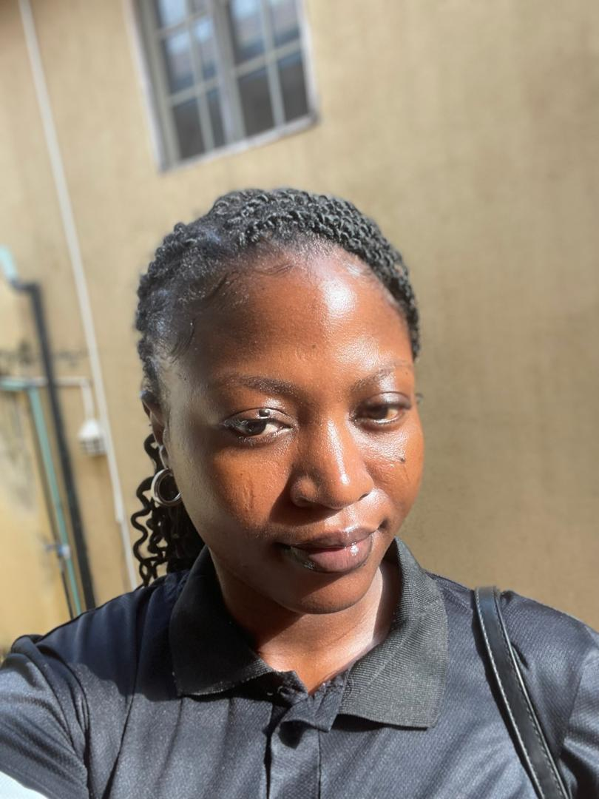

My name is Adegoke Stella Adenike. I am a bubbly, goofy, and a stong-willed woman with a heart that overflows with kindness. I give people grace easily because I believe everyone deserves love and patience. People often describe me as playfull, kind, and a passionate lover - and I embrace those words because they reflect who I truly am.
I currently work full-time as a sales promoter at Vivo Nigeria, while also embarking on an exciting journey into Frontend Development with Altschool Africa, where I'm building the skills and mindset I need for a fulfilling career in tech. I believe in second chances and in the beauty of starting again, even when something is already in moton
I may not have it all figured out yet, but one thing is certain - I am becoming the best version of myself, and the best is yet to come
Aspirations
- To build a thriving career in tech and grow into a successful Frontend Developer
- To inspire othrs through my journey and show that big dreams are possible
- To relocate abroad with my partne and embrace a peaceful new beginnings, because I believe it's okay to start again even when you have something going on
- To nurture a loving marriage and family, grounded in joy and sound health
- To live in abundance - not just in wealth, but in love, kindness and purpose